Подкаст «Грань» · подарок зрителям
Мы продаём промышленный инструмент заводам и монтажникам. Нас в компании 12 человек. Заявки приходят почтой, и раньше их разбирал отдельный сотрудник: прочитать письмо, найти каждую позицию в базе, проверить наличие, посчитать цену. Уходило от получаса до полудня, а клиент к этому времени уже получал ответ от того, кто быстрее. Сейчас это делает машина, круглосуточно и за минуты.
Что это дало в деньгах
Самый честный измеритель не проценты, а исчезнувшая должность. У нас был человек, который занимался только разбором почты. Этой должности больше нет, её работу делает система. Сам сотрудник остался: он перешёл в отдел продаж и теперь зарабатывает деньги, а не сортирует письма.
Взамен появились расходы на сервер и на искусственный интеллект. Они есть, но они в разы меньше одной такой зарплаты. И система не уходит в отпуск, не болеет и читает почту в три часа ночи.
Вторая статья это готовое приложение для 1С. Оно делает одну работу: разбирает почтовые ящики с письмами поставщиков, подтягивает прайсы и остатки, собирает из них закупочную базу. Стоит 220 000 ₽ в год без НДС, и платить надо каждый год: вышло обновление 1С, не заплатил, и всё встало.
Формально приложение умеет больше: и остатки держать, и заказы формировать, и вложения разбирать. На деле пользоваться этим можно только с головой 1С-программиста, который знает, как оно устроено внутри. Закупщик, снабженец или ассистент руководителя к нему не подступится, а значит, за каждую мелочь нужно платить стороннему разработчику. Мы этот путь прошли и сворачиваем с него.
Ведение SEO нам предлагали по 50 000 ₽ в месяц за каждый сайт. Сайтов у нас 74.
Подрядчик брался собрать на n8n (популярный конструктор автоматизаций) примерно десятую часть того, что работает у нас сейчас. Не весь разбор заявок, а один его кусок.
Под отдельным постом в моём телеграм-канале можно спросить что угодно про то, что вы увидели на этой странице: как устроено, во что обошлось, с чего начинать, что из этого не работает.
Дальше я буду разбирать в канале каждый кусок этой системы по отдельности: как устроен разбор почты, как собирается база поставщиков, как считается цена, сколько что стоило. Пока вопросов немного, отвечаю каждому лично и подробно.
01 · Продажи
Машина круглосуточно читает 12 почтовых ящиков и по каждому письму понимает, что это: заявка, письмо поставщика, рассылка или переписка по текущему заказу. Из письма и вложений (таблица, PDF, фотография листа с рукописным перечнем) она достаёт наименования, артикулы и количества, находит каждую позицию в базе из полумиллиона наименований и создаёт заявку с ценами. Карточка клиента заполняется из подписи, а по ИНН подтягиваются реквизиты.
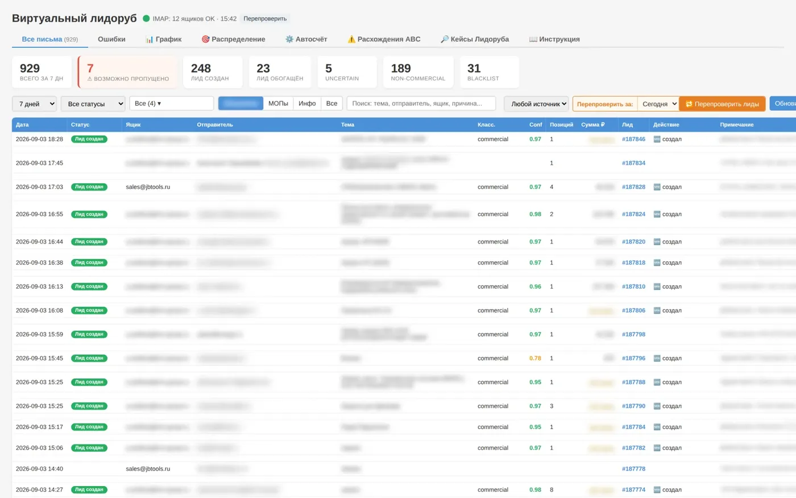
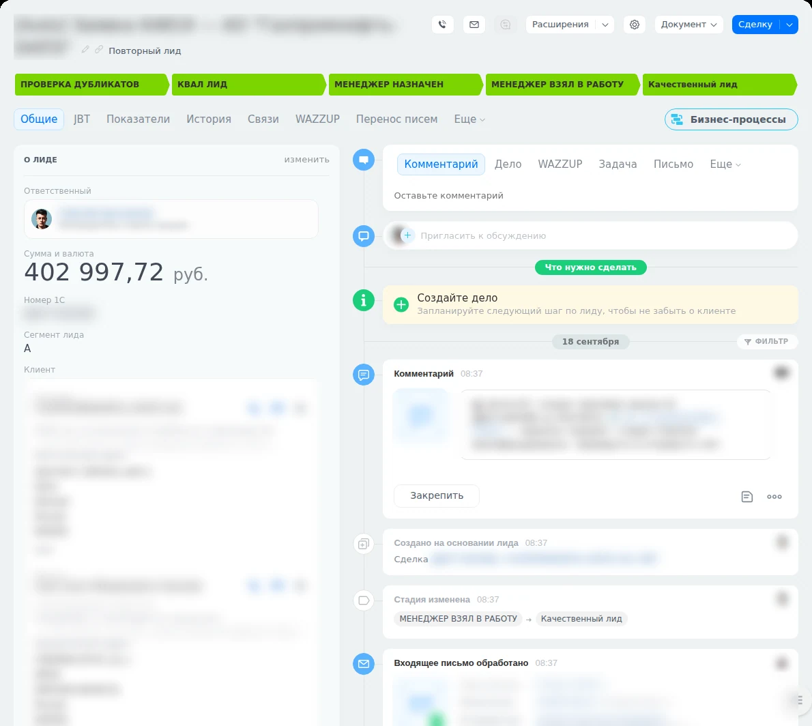
Дальше менеджер открывает заявку и видит её целиком, строка за строкой: что просил клиент, сколько штук, есть ли на складе, почём мы это покупаем, почём продаём, какая скидка допустима и сколько останется нам. Внизу итог по заявке и кнопка «Отправить счёт».
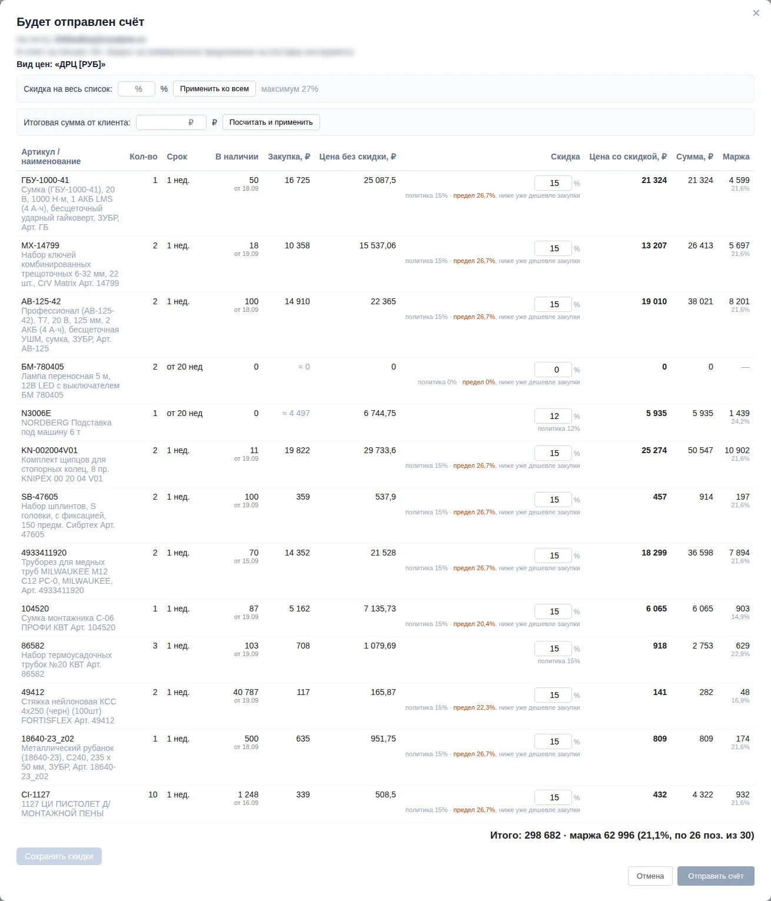
Часть заказов проходит вообще без менеджера: клиент подтверждает заказ, система создаёт заказ в 1С, выставляет счёт и отправляет его. Если хоть одно звено не сходится, робот не отправляет ничего и передаёт человеку.
Не отчёт по итогам месяца, а лента того, что требует вмешательства сегодня: заявка взята, но расценки по ней нет; клиент ждёт дольше нормы; сделка стоит без движения. Рядом табло отдела с нормативами: «заявки взяты вовремя 98,6% при плане 95%». Это разговор с отделом по конкретному числу, а не «работайте лучше».
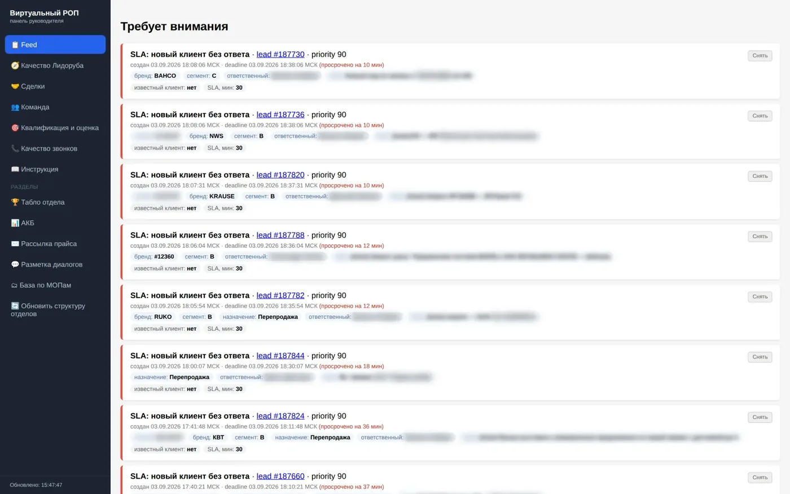
Ночью записи телефонных разговоров расшифровываются в текст и привязываются к сделкам, так что по сделке видно не только письма и счета, но и о чём договорились голосом. Для менеджеров есть своя академия: инструкции, курсы и тесты, чтобы новичок выходил на план быстрее и не дёргал старших.
02 · Поставщики
Чтобы ответить клиенту не «уточним», а ценой и наличием, нужна свежая база. Поставщики присылают файлы, сейчас их 126. Робот раскладывает их в 1С: цены по видам, остатки, сроки. Оттуда данные уходят на сайты и в расчёт заявок. Если у позиции нет подтверждённой цены, она уходит с нулём, а не с придуманным числом: пустая строка лучше неверной цены в предложении клиенту.
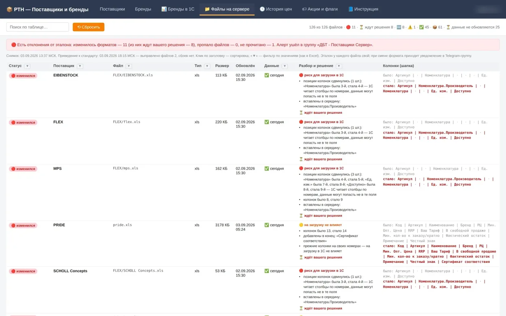
Любую загрузку цен можно откатить: хранится резервная копия прежних. Отдельно живёт реестр акций со сроками, потому что в 1С у акционной цены срока нет: забыли закрыть и продаём себе в убыток, закрыли раньше времени и обманули клиента, который видел цену на сайте.
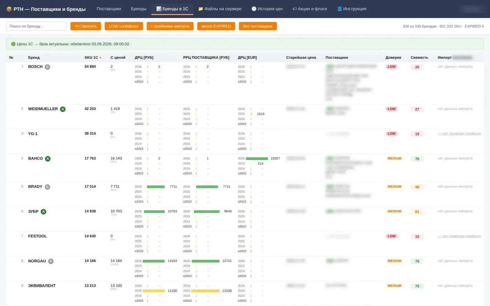
03 · Сайты
Спрос мы собираем не одним магазином, а портфелем узких витрин под конкретные бренды инструмента. Всё, что обычно требует подрядчиков (сервер, вёрстка, выбор платформы, обновление цен и остатков), делается из одной панели, куда я захожу как управляющий, а не как программист. По каждому сайту видно состояние, счётчики, ассортимент и дату последнего обновления остатков.
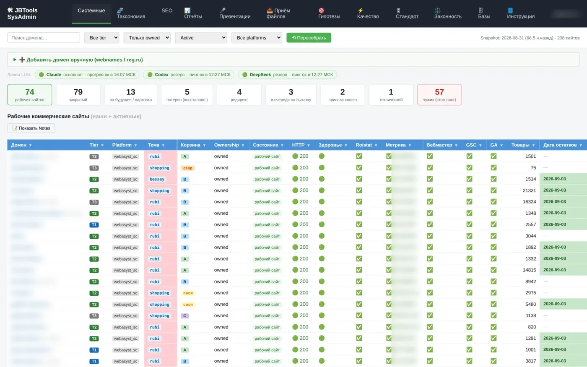
Та же панель стережёт сроки 102 доменов и предупреждает заранее. Забыть продлить домен, на котором стоит работающая витрина, значит потерять сайт вместе с накопленным поисковым трафиком.
04 · Маркетинг и аналитика
Посещаемость забирается из панелей Google и Яндекса каждый день автоматически. Смысл не в красивом графике, а в ответе на один вопрос: если трафик упал, это мы сломали своей правкой или это поисковик и сезон. Поэтому на график наносятся дни наших правок сайтов, и провал сразу сопоставляется с тем, что мы делали в этот день.
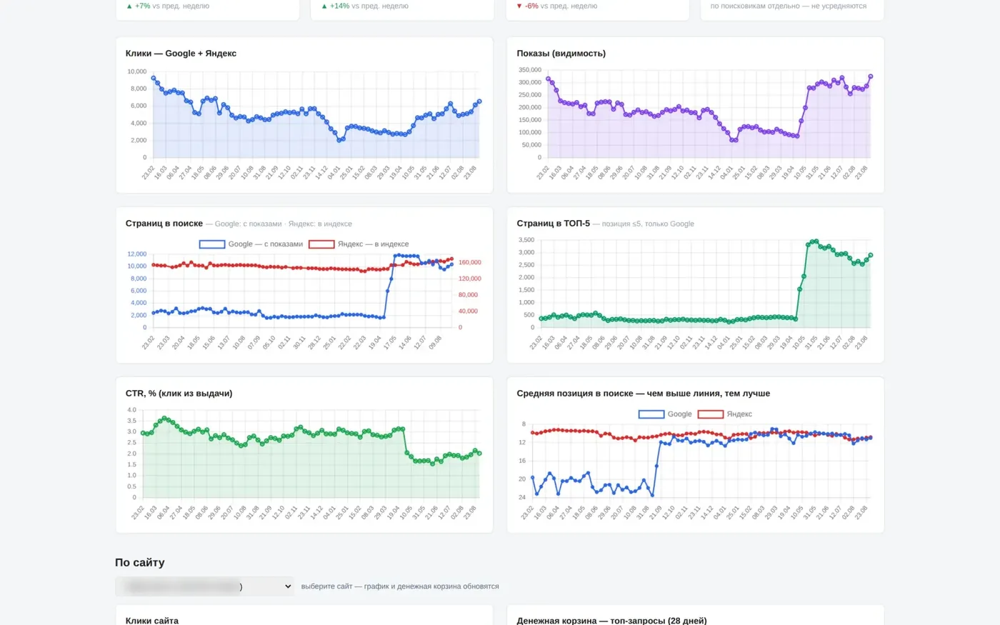
05 · Наполнение сайтов
Карточка товара без характеристик не продаёт и не находится в поиске. Заполнять их руками на сотнях тысяч позиций невозможно, поэтому они собираются машиной: с наших же витрин, из фидов поставщиков и из архивов разбора каталогов производителей. Сейчас в базе 1 537 550 фактов о товарах на 108 068 позициях, и у каждого факта записано, откуда он взят и насколько ему можно верить.
06 · Управление
Раньше любое действие означало «зайти в кабинет»: в CRM выдать права, в почту создать ящик, в панель хостинга что-то поправить. Сейчас я отправляю голосовое сообщение, и оно превращается в заметку, в готовое письмо сотруднику или в задачу, которую выполняет система с доступами к этим сервисам. Сказал «оформи нового сотрудника», и заводится пользователь, отдел, права и почтовый ящик, а мне отчитываются, что сделано.
Отчёты сами приходят в телеграм, по одному боту на тему, чтобы важное не тонуло. Правило, без которого вся эта сеть бесполезна: молчание это норма. Бот не пишет «я работаю» и «всё хорошо». Как только в канал попадает рутина, на него перестают смотреть и пропускают настоящую тревогу.
Честно
Про это обычно не рассказывают. Автоматика ошибается регулярно, и вопрос не в том, как сделать, чтобы не ошибалась, а в том, как узнать об ошибке раньше клиента.
Поэтому у системы есть встроенный аудитор: она сама просматривает свою работу, находит подозрительные случаи и выносит их человеку обычным языком, с прямым вопросом. Ответ человека возвращается обратно, и на этих ответах она учится.
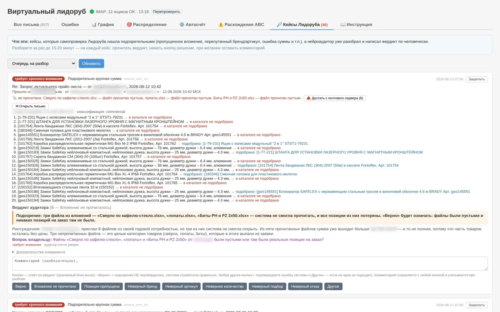
Посмотреть вживую
Цены и остатки на них обновляются из той же базы, о которой выше. Зайдите и посмотрите сами.
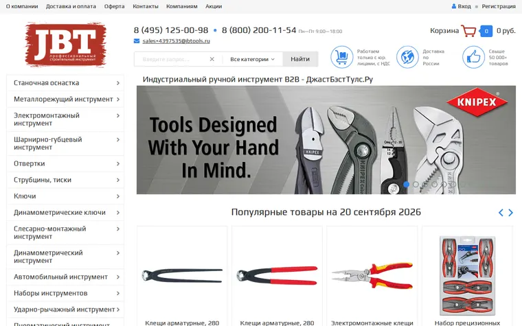
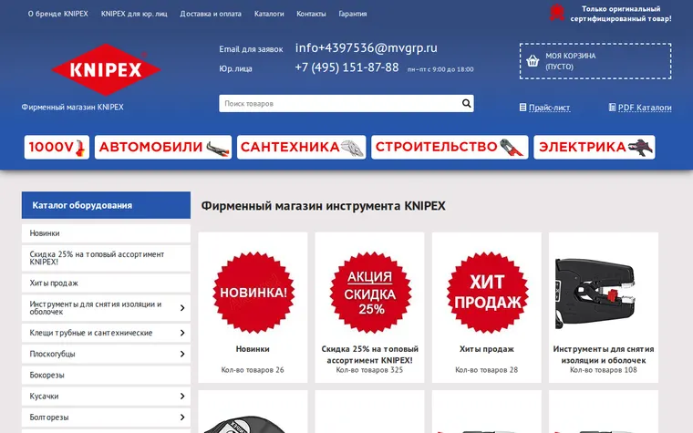
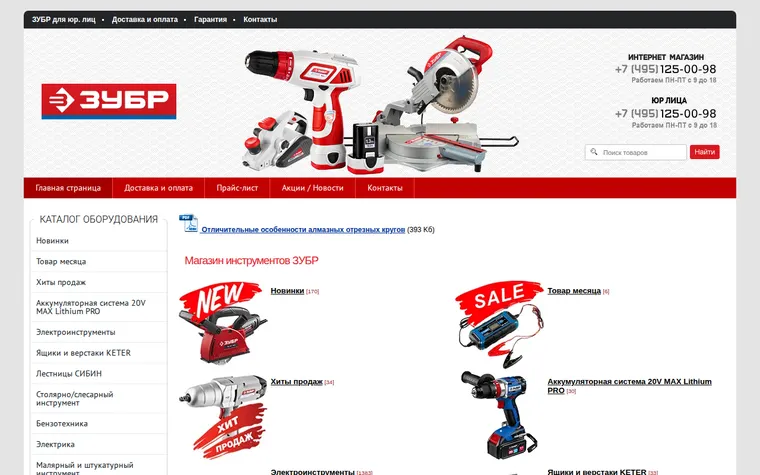
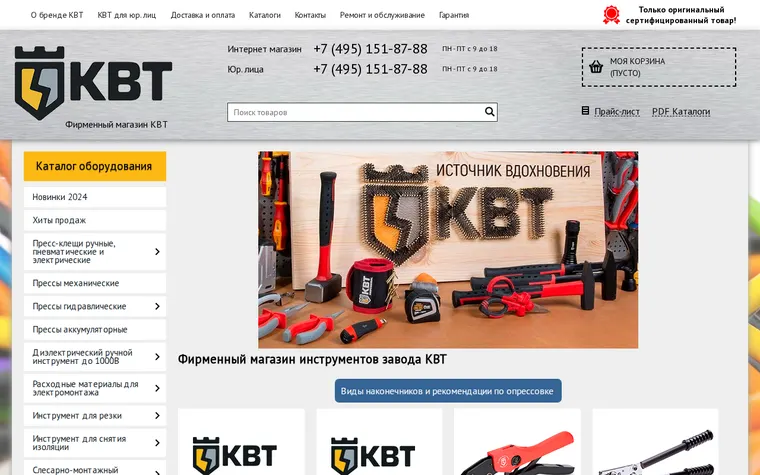
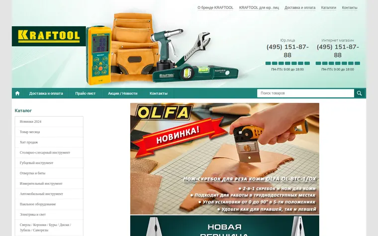
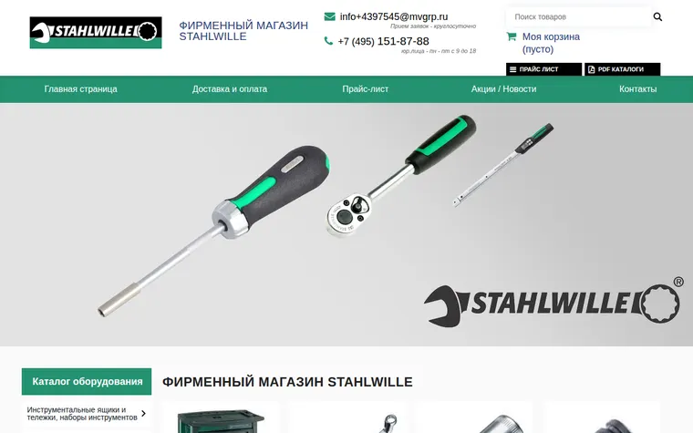
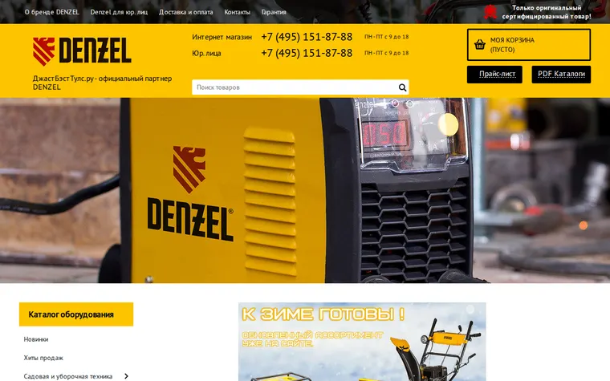
Как это собрано
Я не программист и ни строчки кода руками не писал. Ставлю задачу словами, проверяю на живых заявках, возвращаю замечания: «поставщик переставил колонки в файле, предупреждай заранее», «цена не подтверждена, в счёт не ставь». В компании на 10-50 человек эту роль берёт бизнес-ассистент или сам руководитель.
Ваши ценные данные хранятся на закрытом сервере в России, с соблюдением 152-ФЗ о персональных данных. Систему безопасности можно проработать любой сложности.
Запишитесь на экскурсию: проведу по живой системе целиком и расскажу, как она работает. Кроме продаж, поставщиков и сайтов, покажу то, что на эту страницу не вошло.
Знаете компанию, которой это пригодится? Перешлите ей эту страницу, пусть приходит на экскурсию вместе с вами.